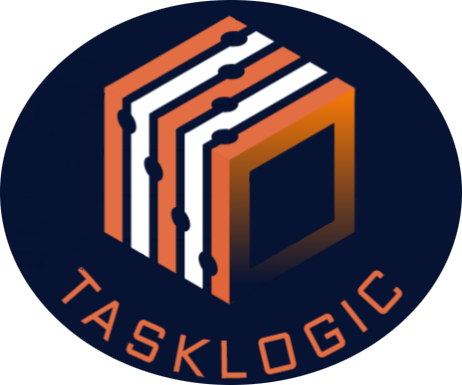

<ion-content>
  <ion-content [fullscreen]="true">
    <ion-card class="ion-padding transparent-card card-margin">
      
      <ion-card-header>
        <ion-card-title class="ion-text-center">
          <h1>Inicio de sesión</h1>
        </ion-card-title>
      </ion-card-header>
      
      

      <form [formGroup]="form" clas="auth-form" (ngSubmit)="submit()" (keypress.enter)="submit()">

        <p class="ion-text-center">Te enviaremos un email para que puedas restablecer tu contraseña</p>

        <!--========== Email =========-->
        <app-custom-input 
        autocomplete="email"
        icon="mail-outline"
        [control]="form.controls.email"
        type="email"
        label="Correo"
        ></app-custom-input>

        <div class="validators" *ngIf="form.controls.email.errors && form.controls.email.touched">
          <div *ngIf="form.controls.email.errors?.['required']">El correo es requerido</div>
          <div *ngIf="form.controls.email.errors?.['email']">Ingrese un correo valido</div>
        </div>
        


        <ion-button expand="block" mode="ios" class="submit" type="submit" [disabled]="form.invalid">
          Recuperar
          <ion-icon slot="end" name="arrow-forward"></ion-icon>
        </ion-button>


      </form>


    </ion-card>
  </ion-content>
</ion-content>
